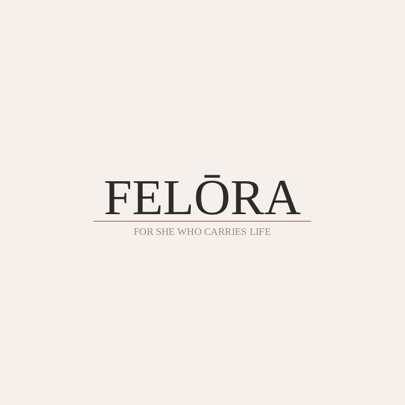
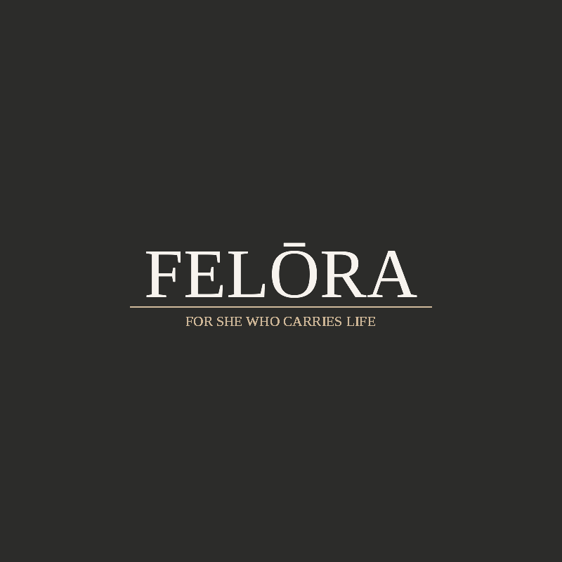

The FELŌRA wordmark — serif capitals with the macron over the Ō, set above a tan rule and the brand tagline. Light variant on ivory, dark variant on noir. Never recoloured. Never on a busy photograph without a tinted overlay.